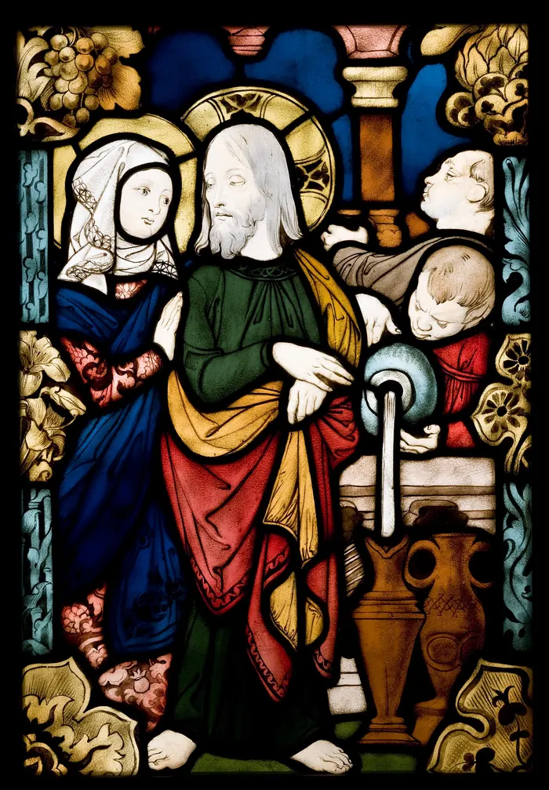
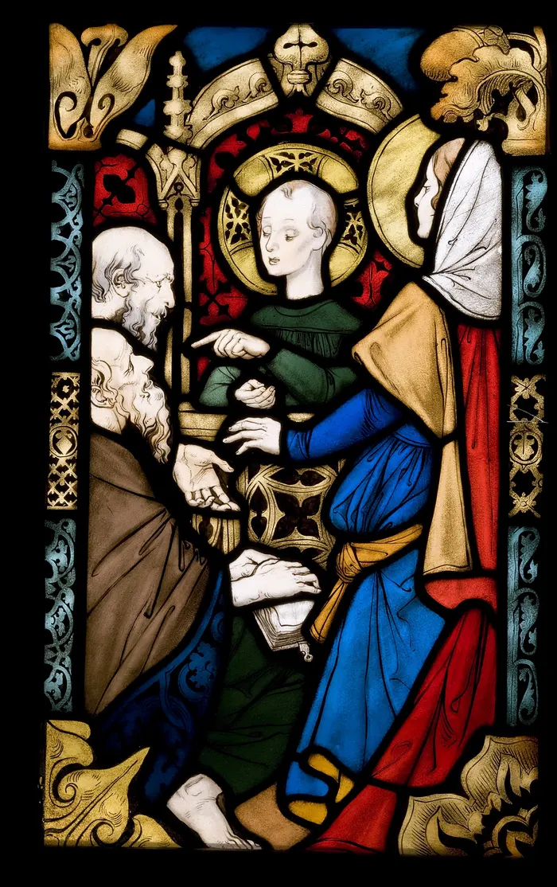
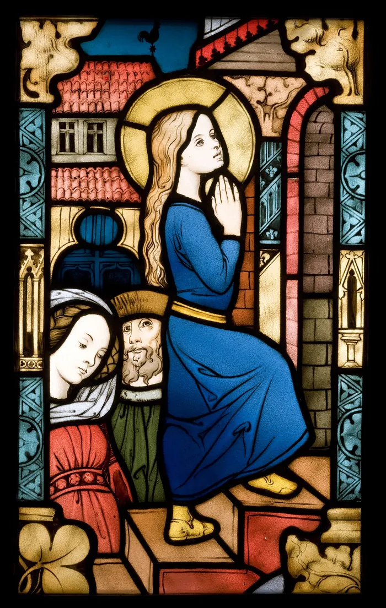
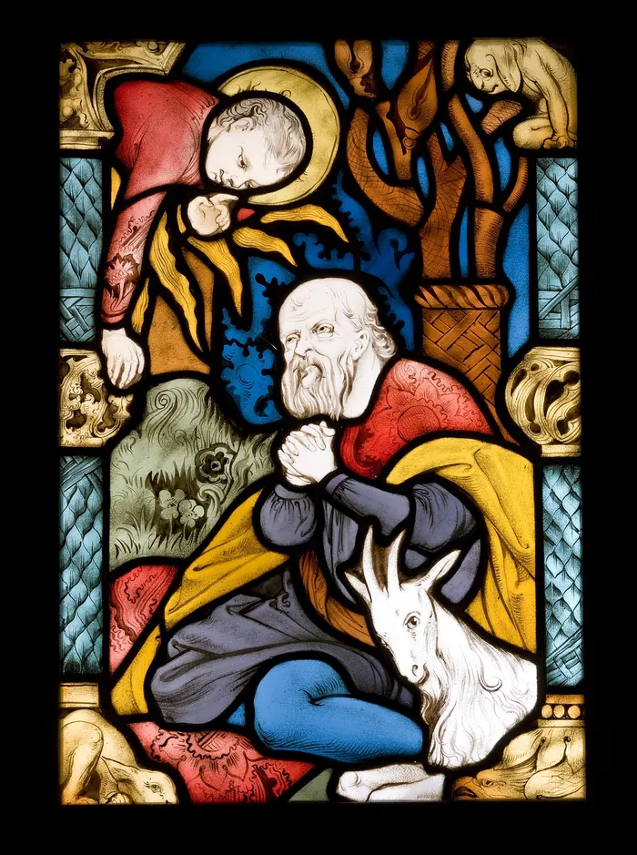
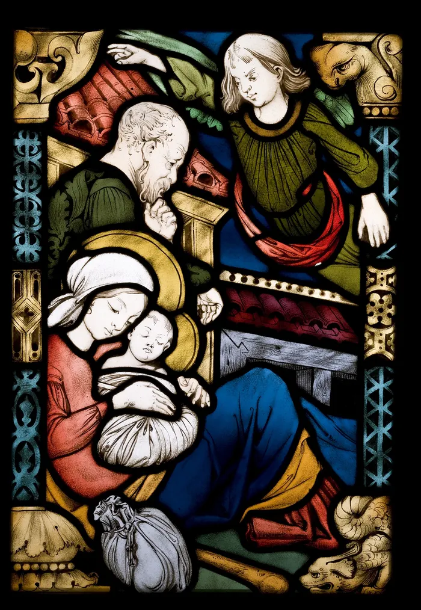
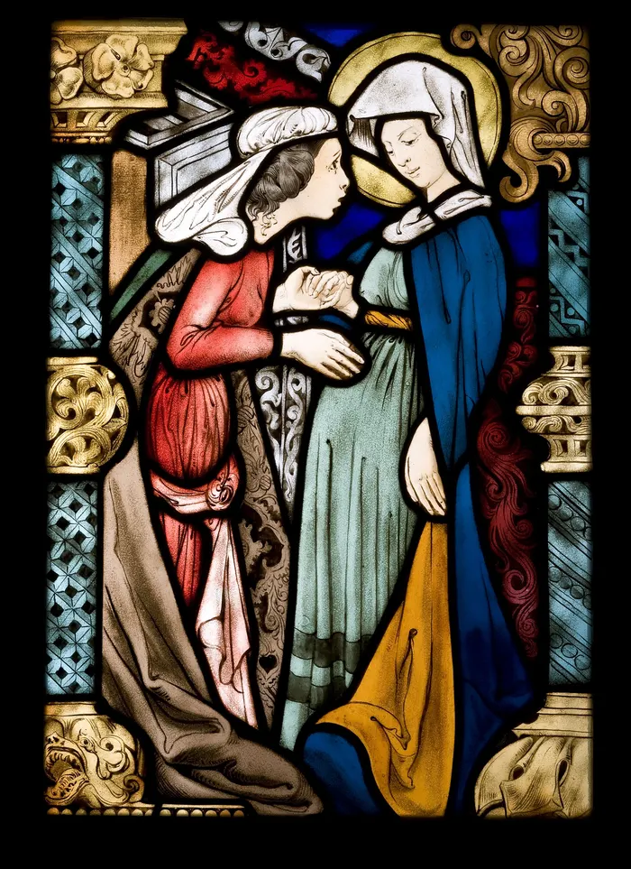
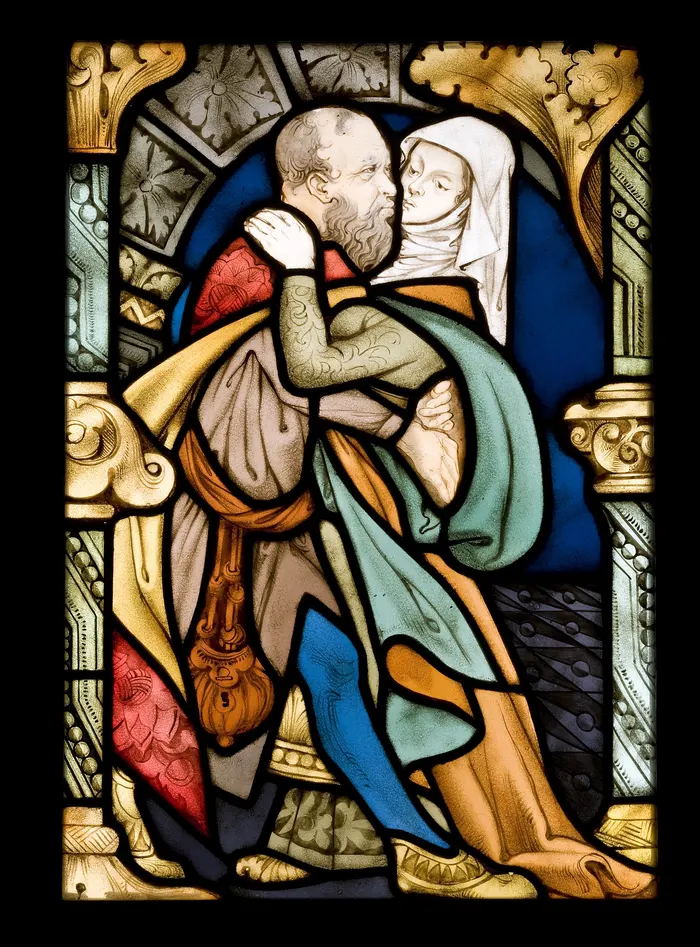
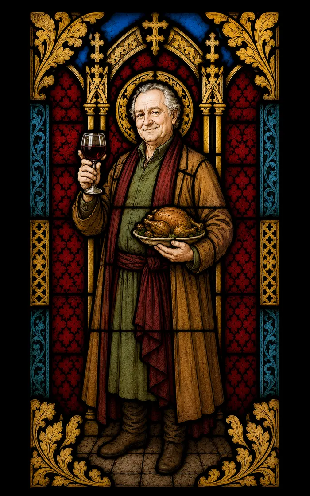

Mocna kompozycja i nasycone barwy.

Scena z wyraźnie prowadzoną linią postaci.

Spokojniejszy, jasny wariant.

Mocna linia i napięcie kompozycji.

Dynamiczny panel z mocnym gestem.

Kontrastowy, czytelny kadr.

Złote akcenty i zwarta scena.

Łagodne światło i architektoniczny rytm.